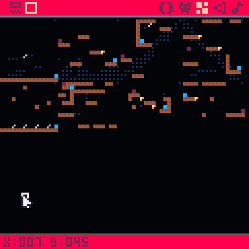
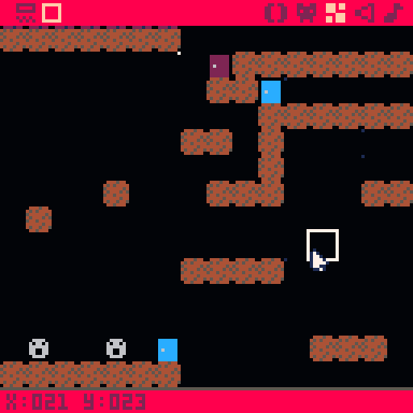

I wanted to revisit my VVVVVV inspired game BBBBBB. I decided to make a sequel using PICO-8 and named it CCCCCC, naturally. Being a sequel the gameplay needed to be expanded. I added two different enemy types, a horizontal and a vertical moving enemy and 16 different levels. This is probably one of the most complete games I have made and I am very happy with the results.
You emerge from the purple door and your goal is to reach the blue door. Your character is a green stick man that can move left or right with the arrow keys. You are not able to jump but you can change the direction of gravity. This will allow you to navigate the obstacles and reach the blue door. If you fall off the edge or if you bump into an enemy you will reset at the purple door. In the upper left hand corner you can see which level you are on in white text. In the upper right hand corner you can see the number of times you have died. You can play the game here.
The map in PICO-8 is 128x32 cells. Each cell is then an 8x8 sprite. To keep things simple I restricted all sprites to be 8x8. One of my goals when making this game was to utilize the map editor in PICO-8 as much as possible. Besides setting the location of the game world entities from the map editor I also wanted to be able to set the background effect. To do this I first decided that each level will be comprised of a 16x16 grid of cells. I would then place the sprites using the PICO-8 map editor on in that particular level. At the start of each level I would calculate when section of the map needs to be parsed by level index global. Sprites for that indicate the background effect and the enemy sprites would then be erased (covered up with a black rectangle) from the map. Only one sprite for the background effect is respected for the level. The cells where enemies are found on the map are considered their starting points. The game would then update the enemies per frame and ensure that they are drawn at the correct location.
Initially I was attempting to do collision detection between the player rectangle and the map cell. After about a week of trying to fix various bugs; I decided to parse the platform blocks into a table at the start of each level. This was a good idea because it allowed me to use the map editor to define the background effect and enemy locations. The only annoying part was that I could not find a quick way to move the map over by 16 cells. This made it easy to accidentally place cells on the wrong level. I also couldn’t find a way to just erase a sprite from the map, I always had to pick another empty sprite to replace it. All in all, the map editor greatly sped up the level creation and I think it was the right approach.